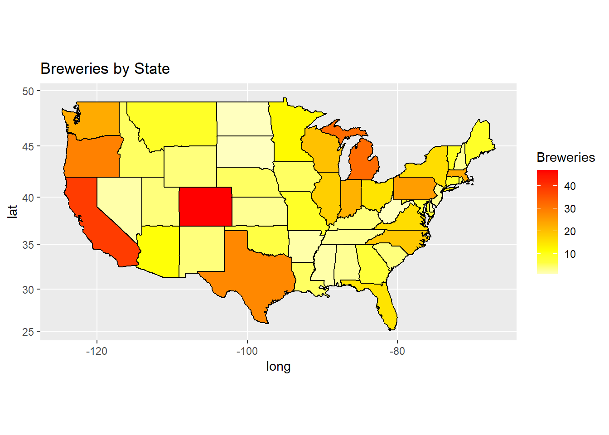
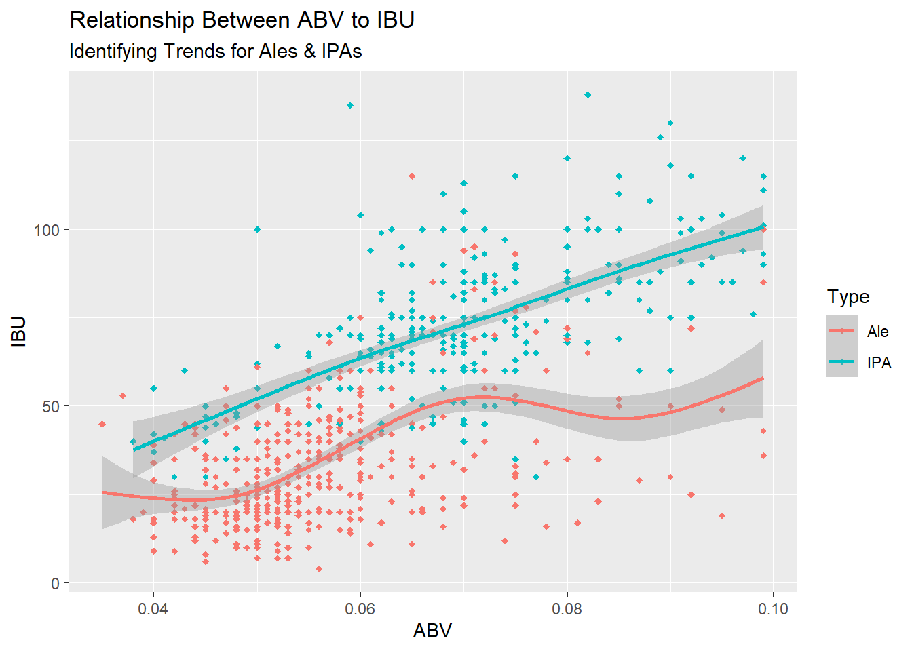

Case Study 1: EDA to Create a new Beer for U.S. Craft Enthusiasts
Domicia Herring & Taylor Bonar
2/28/2021
Introduction
To determine the make up of a new beer for Budwiser, an exploratory data analysis of beers and breweries from the United States was conducted.Comparing the Alcohol By Volume
(ABV) and International Bitterness Unit (IBU) of each beer, a modern new beer was determined for Budwiser’s upcoming luxury beer release. By analyzing the data,
the goal was to create the perfect beer highlighted with natural flavors, a soaring ABV and a low IBU. Budweiser presents ‘Q-Tine’ its newest luxury beer.
Libraries & Package Setup
#Multiple libraries was loaded to the file.
# Load APIs
library(ggplot2)## Warning: package 'ggplot2' was built under R version 4.0.3library(dplyr)## Warning: package 'dplyr' was built under R version 4.0.4##
## Attaching package: 'dplyr'## The following objects are masked from 'package:stats':
##
## filter, lag## The following objects are masked from 'package:base':
##
## intersect, setdiff, setequal, unionlibrary(maps)## Warning: package 'maps' was built under R version 4.0.3library(mapproj)## Warning: package 'mapproj' was built under R version 4.0.3library(stringr)## Warning: package 'stringr' was built under R version 4.0.3library(tidyr)## Warning: package 'tidyr' was built under R version 4.0.3library(class)## Warning: package 'class' was built under R version 4.0.3library(caret)## Warning: package 'caret' was built under R version 4.0.3## Loading required package: latticelibrary(e1071)## Warning: package 'e1071' was built under R version 4.0.3Global Variable Setup & Cleanup
# Importing input data
breweries = read.csv("Breweries.csv")
beers = read.csv("Beers.csv")
# Cleaning Data of invalid beginning space
breweries$State <- str_replace_all(breweries$State, "(\\s+)", "")Data Analysis
How many breweries are present in each state?
# Data tidying
## Due to Washington, DC not being a state, it has been removed from the data.
breweriesStates = filter(breweries,!grepl('DC', State))
# Data Transformation
## Create data frame with State name and abbreviation
stateLookup = data.frame(abb = state.abb, stateName = state.name)
## Merge stateLookup with breweriesMapData
breweriesStates2 = merge(breweriesStates,stateLookup,by.x="State",by.y="abb")
## Count each occurrence of breweries in each state
breweriesMapData = count(breweriesStates2,stateName)
## remap columns for future merge of states and map
colnames(breweriesMapData) = c("region","Breweries")
breweriesMapData$region <- tolower(breweriesMapData$region)
## Create merge between states lat/long and breweries map data
states <- map_data("state")
map.df <- merge(states, breweriesMapData, by="region", all.x=T)
map.df <- map.df[order(map.df$order),]
## Create U.S. heat map to visualize states breweries count
ggplot(map.df, aes(x=long,y=lat,group=group))+
geom_polygon(aes(fill=Breweries))+
geom_path()+
scale_fill_gradientn(colours=rev(heat.colors(10)),na.value="grey90")+ggtitle("Breweries by State")+coord_map()
Merge beer data with the breweries data. Print the first 6 observations and the last six observations to check the merged file.
# Join beer and breweries by common brewery identifier
beerAndBreweries = merge(beers, breweries, by.x="Brewery_id", by.y="Brew_ID")
# Remap columns named "Name" to be more descriptive/ubiquitous
colnames(beerAndBreweries)[2] = "Beer_Name"
colnames(beerAndBreweries)[8] = "Brewery_Name"
# Show first six rows
head(beerAndBreweries)## Brewery_id Beer_Name Beer_ID ABV IBU Style Ounces
## 1 1 Get Together 2692 0.045 50 American IPA 16
## 2 1 Maggie's Leap 2691 0.049 26 Milk / Sweet Stout 16
## 3 1 Wall's End 2690 0.048 19 English Brown Ale 16
## 4 1 Pumpion 2689 0.060 38 Pumpkin Ale 16
## 5 1 Stronghold 2688 0.060 25 American Porter 16
## 6 1 Parapet ESB 2687 0.056 47 Extra Special / Strong Bitter (ESB) 16
## Brewery_Name City State
## 1 NorthGate Brewing Minneapolis MN
## 2 NorthGate Brewing Minneapolis MN
## 3 NorthGate Brewing Minneapolis MN
## 4 NorthGate Brewing Minneapolis MN
## 5 NorthGate Brewing Minneapolis MN
## 6 NorthGate Brewing Minneapolis MN# Show last six rows
tail(beerAndBreweries)## Brewery_id Beer_Name Beer_ID ABV IBU Style Ounces
## 2405 556 Pilsner Ukiah 98 0.055 NA German Pilsener 12
## 2406 557 Heinnieweisse Weissebier 52 0.049 NA Hefeweizen 12
## 2407 557 Snapperhead IPA 51 0.068 NA American IPA 12
## 2408 557 Moo Thunder Stout 50 0.049 NA Milk / Sweet Stout 12
## 2409 557 Porkslap Pale Ale 49 0.043 NA American Pale Ale (APA) 12
## 2410 558 Urban Wilderness Pale Ale 30 0.049 NA English Pale Ale 12
## Brewery_Name City State
## 2405 Ukiah Brewing Company Ukiah CA
## 2406 Butternuts Beer and Ale Garrattsville NY
## 2407 Butternuts Beer and Ale Garrattsville NY
## 2408 Butternuts Beer and Ale Garrattsville NY
## 2409 Butternuts Beer and Ale Garrattsville NY
## 2410 Sleeping Lady Brewing Company Anchorage AKFor metrics and later data analysis, beers with missing IBUs and ABV were removed for the below reasons.
International bitterness units (IBUs) may not be included for all beers as some are not geared for their bitter flavors (e.g. lagers), but rather, IBU tends to be used as a quality control metric. IBUs tend not to be centered on marketing to impact a consumer’s experience, but are simply there to satisfy some curiosities.
Alcohol by Volume (ABV) are not always printed, or rather required, to be displayed on beers by federal regulations. Instead, states regulate the advertisment of alcohol contents after the a unanimous vote in the Rubin vs Coors Brewing Co. 154 U.S.476 (1995). This court case argued against a 1935 decision ban on listing alcohol content to prevent “brewing wars”.
# Observe summary of data, only IBU and ABV contains NAs
summary(beerAndBreweries)## Brewery_id Beer_Name Beer_ID ABV IBU
## Min. : 1.0 Length:2410 Min. : 1.0 Min. :0.00100 Min. : 4.00
## 1st Qu.: 94.0 Class :character 1st Qu.: 808.2 1st Qu.:0.05000 1st Qu.: 21.00
## Median :206.0 Mode :character Median :1453.5 Median :0.05600 Median : 35.00
## Mean :232.7 Mean :1431.1 Mean :0.05977 Mean : 42.71
## 3rd Qu.:367.0 3rd Qu.:2075.8 3rd Qu.:0.06700 3rd Qu.: 64.00
## Max. :558.0 Max. :2692.0 Max. :0.12800 Max. :138.00
## NA's :62 NA's :1005
## Style Ounces Brewery_Name City State
## Length:2410 Min. : 8.40 Length:2410 Length:2410 Length:2410
## Class :character 1st Qu.:12.00 Class :character Class :character Class :character
## Mode :character Median :12.00 Mode :character Mode :character Mode :character
## Mean :13.59
## 3rd Qu.:16.00
## Max. :32.00
## # We'll drop beers from the merged data that do not contain a value (i.e. NA)
beerAndBreweries2 = beerAndBreweries %>% drop_na(IBU, ABV)
# Observe data contains no NA values
summary(beerAndBreweries2)## Brewery_id Beer_Name Beer_ID ABV IBU Style
## Min. : 1.0 Length:1405 Min. : 1 Min. :0.02700 Min. : 4.00 Length:1405
## 1st Qu.: 95.0 Class :character 1st Qu.: 772 1st Qu.:0.05000 1st Qu.: 21.00 Class :character
## Median :198.0 Mode :character Median :1439 Median :0.05700 Median : 35.00 Mode :character
## Mean :224.2 Mean :1415 Mean :0.05991 Mean : 42.71
## 3rd Qu.:351.0 3rd Qu.:2069 3rd Qu.:0.06800 3rd Qu.: 64.00
## Max. :547.0 Max. :2692 Max. :0.12500 Max. :138.00
## Ounces Brewery_Name City State
## Min. : 8.40 Length:1405 Length:1405 Length:1405
## 1st Qu.:12.00 Class :character Class :character Class :character
## Median :12.00 Mode :character Mode :character Mode :character
## Mean :13.51
## 3rd Qu.:16.00
## Max. :32.00Exploring the median alcohol content and international bitterness unit for each state.
# Calculate median of ABV or IBU by state grouping
medianABVbyState = aggregate(beerAndBreweries2$ABV,
list(beerAndBreweries2$State),
median)
medianIBUbyState = aggregate(beerAndBreweries2$IBU,
list(beerAndBreweries2$State),
median)
# Remap column names to be more descriptive
colnames(medianABVbyState) = c("State", "ABV")
colnames(medianIBUbyState) = c("State", "IBU")
# TODO: Add better visualization, too many states creates clutter and can overwhelm data visualization
ggplot(medianABVbyState, aes(x=State,y=ABV)) +
geom_col(fill = "#f28e1c") +
labs(title = "Median Alcohol by Volume (ABV) for Each State") +
theme(axis.text.x = element_text(size = 7, angle = 45, hjust = 1))ggplot(medianIBUbyState, aes(x=State,y=IBU)) +
geom_col(fill = "#f28e1c") +
labs(title = "Median International Bitterness Units (IBU) for Each State") +
theme(axis.text.x = element_text(size = 7, angle = 45, hjust = 1))Which state has the maximum alcoholic (ABV) beer? Which state has the most bitter (IBU) beer?
#Arrange to see in desc order by ABV
beerAndBreweries2 %>% group_by(State) %>% summarize(maxABV = max(ABV), count = n()) %>% arrange(desc(maxABV)) %>% print(n = 1)## # A tibble: 50 x 3
## State maxABV count
## <chr> <dbl> <int>
## 1 KY 0.125 14
## # ... with 49 more rows#Arrange to see in order by IBU
beerAndBreweries2 %>% group_by(State) %>% summarize(maxIBU = max(IBU), count = n()) %>% arrange(desc(maxIBU)) %>% print(n = 1)## # A tibble: 50 x 3
## State maxIBU count
## <chr> <int> <int>
## 1 OR 138 87
## # ... with 49 more rows# find max of ABV, then show ABV level and State from the row
beerAndBreweries2[which.max(beerAndBreweries2$ABV),c(4,10)]## ABV State
## 8 0.125 KY# find max of IBU, then show IBU and State from the row
beerAndBreweries2[which.max(beerAndBreweries2$IBU),c(5,10)]## IBU State
## 1134 138 ORSummary statistics and distribution of the ABV variable.
# Create initial summary of ABV content to gauge initial data metrics
summary(beerAndBreweries2$ABV)## Min. 1st Qu. Median Mean 3rd Qu. Max.
## 0.02700 0.05000 0.05700 0.05991 0.06800 0.12500# Compute the number of breaks by classes for histogram
## range = min is 0.027 and max is 0.125
## nclass.FD computes the number of classes for a histogram
breaks <- pretty(range(beerAndBreweries2$ABV), n = nclass.FD(beerAndBreweries2$ABV), min.n = 1)
# Compute binwidth for histogram based on suggested number of classes within the range of ABV
## (e.g. 0.03-0.025 = 0.005)
bwidth <- breaks[2]-breaks[1]
# Create histogram with spaced bins of ABV vs. number of beers
ggplot(beerAndBreweries2, aes(ABV)) +
geom_histogram(fill = "#f28e1c", color="brown", binwidth = bwidth) +
geom_density(alpha=.2, fill="blue") +
labs(title="Distribution of Alcohol by Volume") +
xlab("Alcohol by Volume (ABV)") +
ylab("Number of Beers")## TODO: Comment on statistics/distribution of ABV variableIs there an apparent relationship between the bitterness of the beer and its alcoholic content?
# Create overall scatterplot to observe any clustering effect
beerAndBreweries2 %>% ggplot(aes(x=ABV, y=IBU)) + geom_point(colour = "red") + ggtitle("ABV vs. IBU") +
xlab("ABV") + ylab("IBU")# Create second overall scatterplot with trend line to observe relationship
ggplot(beerAndBreweries2, aes(x=ABV, y=IBU)) +
geom_point(color = "#f28e1c", shape = "diamond", size = 1.5) +
geom_smooth(method = 'gam', formula = y ~ s(x, bs = "cs")) +
labs(title = "Relationship Between ABV and IBU",
subtitle = "An Upward Trend")## TODO: Comment on relationship and elaborateBudweiser would also like to investigate the difference with respect to IBU and ABV between IPAs (India Pale Ales) and other types of Ale (any beer with “Ale” in its name other than IPA). You decide to use KNN classification to investigate this relationship. Provide statistical evidence one way or the other. You can of course assume your audience is comfortable with percentages … KNN is very easy to understand conceptually.
#Filter for all styles that contain 'Ale' or 'India Pale Ale' and create a new data frame.
alesAndIPAs <- beerAndBreweries2 %>% select(Style,ABV,IBU) %>% filter(str_detect(Style, 'Ale') | str_detect(Style, 'IPA'))
# Make all Ales one type, and all IPAs as another type
alesAndIPAs2 = mutate(alesAndIPAs, Type = ifelse(str_detect(Style, 'Ale'), 'Ale', 'IPA'))
# Locate best k value for 70/30 split on knn
splitPerc = .7
# Loop for many k and the average of many training / test partition
iterations = 500
numks = 40
masterAcc = matrix(nrow = iterations, ncol = numks)
for(j in 1:iterations)
{
accs = data.frame(accuracy = numeric(30), k = numeric(30))
trainIndices = sample(1:dim(alesAndIPAs2)[1],round(splitPerc * dim(alesAndIPAs2)[1]))
train = alesAndIPAs2[trainIndices,]
test = alesAndIPAs2[-trainIndices,]
for(i in 1:numks)
{
classifications = knn(train[,c(2,3)],test[,c(2,3)],train$Type, prob = TRUE, k=i)
table(classifications,test$Type)
CM = confusionMatrix(table(classifications,test$Type))
masterAcc[j,i] = CM$overall[1]
}
}
# Graph k-values mean accuracies to observe best k-value to use
MeanAcc = colMeans(masterAcc)
plot(seq(1,numks,1),MeanAcc, type = "l",
main="Average Accuracy of k-values",
xlab = "k-values",
ylab = "Average Accuracy")
# Grab most accurate k-value (i.e. the one with the highest average accuracy)
strongK = which.max(MeanAcc)
# Use KNN to classify beers that are IPAs vs Ales based on IBU and ABV.
classifications = knn(train[,c(2,3)], test[,c(2,3)], train$Type, k = strongK, prob=T)
# Demonstrate how knn classified the test set against the train set
table(classifications,test$Type)##
## classifications Ale IPA
## Ale 149 21
## IPA 19 94# Statistics behind classifications table
confusionMatrix(table(classifications,test$Type))## Confusion Matrix and Statistics
##
##
## classifications Ale IPA
## Ale 149 21
## IPA 19 94
##
## Accuracy : 0.8587
## 95% CI : (0.8125, 0.8971)
## No Information Rate : 0.5936
## P-Value [Acc > NIR] : <2e-16
##
## Kappa : 0.7062
##
## Mcnemar's Test P-Value : 0.8744
##
## Sensitivity : 0.8869
## Specificity : 0.8174
## Pos Pred Value : 0.8765
## Neg Pred Value : 0.8319
## Prevalence : 0.5936
## Detection Rate : 0.5265
## Detection Prevalence : 0.6007
## Balanced Accuracy : 0.8521
##
## 'Positive' Class : Ale
## #Show scatterplot based on Type to observe visually the classifications knn may have done
ggplot(alesAndIPAs2, aes(x=ABV, y=IBU, col = Type)) +
geom_point(shape = "diamond", size = 1.5) +
geom_smooth(method = 'gam', formula = y ~ s(x, bs = "cs")) +
labs(title = "Relationship Between ABV to IBU",
subtitle = "Identifying Trends for Ales & IPAs")
# Flip perspective of continuous variables, notice how trends collide between the two beer types
ggplot(alesAndIPAs2, aes(x=IBU, y=ABV, col = Type)) +
geom_point(shape = "diamond", size = 1.5) +
geom_smooth(method = 'gam', formula = y ~ s(x, bs = "cs")) +
labs(title = "Relationship Between IBU to ABV",
subtitle = "A Flipped Perspective")